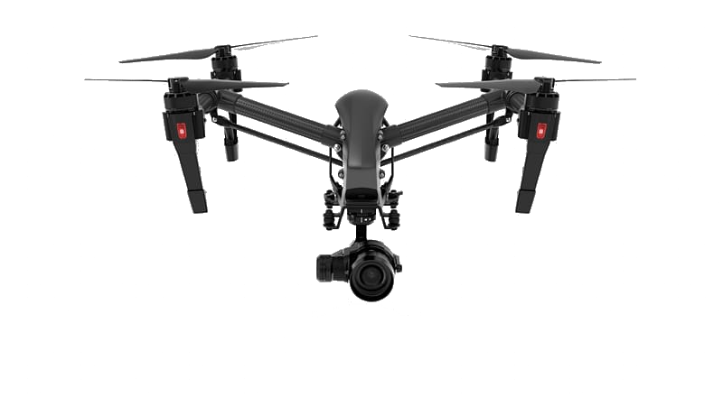

<div class="video-banner">
    <video autoplay preload muted loop id="video">
        <source src="{{site.data.home.video}}" type="video/mp4" />
        
    </video>
    <div class="overlay">
        <h1>{{site.data.home.title}}</h1>
		<p>{{site.data.home.sub-title}}</p>
    </div>
</div>

<div class="drone-img-map">
    <ul>
        
        {% for point in site.data.drone-image-map.points %}
        <li class="image-map-item">
            <a class="map-point" style="top: {{point.top}}%; left: {{point.left}}%; transform: translate(-{{point.left}}%, -{{point.top}}%)">
                <i class="fa fa-info" aria-hidden="true"></i>
                <span class="popup {{point.shadow}} {{point.color}}" style="margin: {{point.popup-origin}}">
                    <p class="dark-background">{{ point.text }}</p>
                </span>
            </a>
        </li>
        {% endfor %}
    </ul>
</div>

